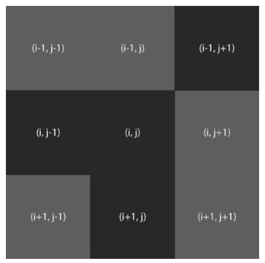
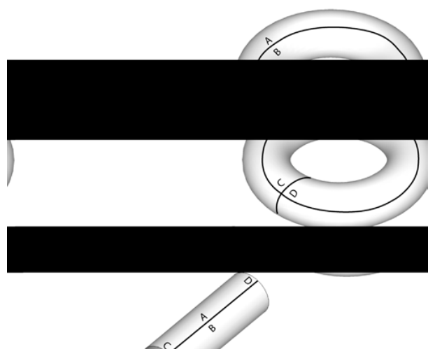
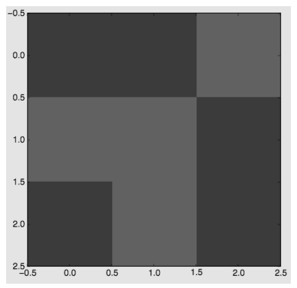
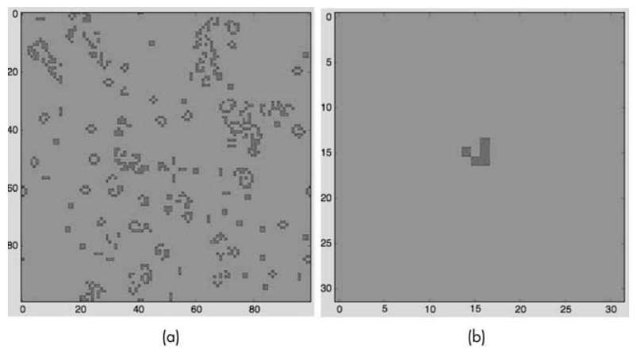
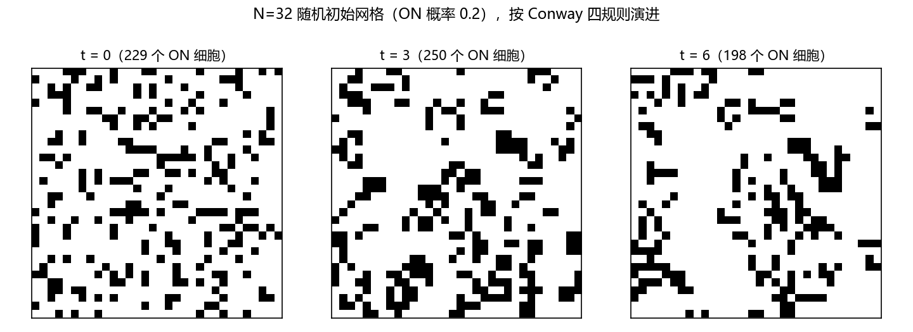
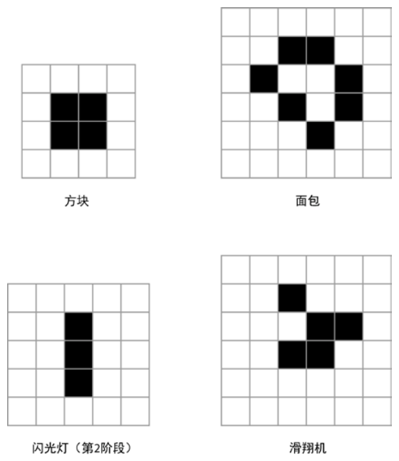
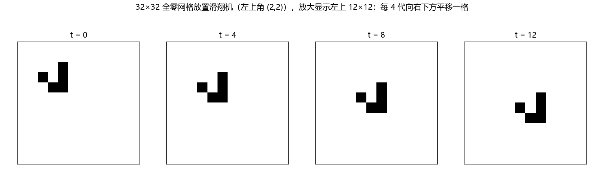
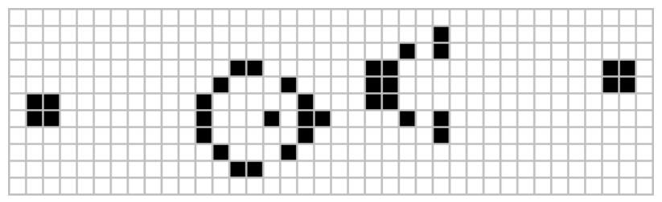

第 3 章 Conway 生命游戏#
本章解决：如何用计算机研究一个随时间演化的系统——以 Conway 生命游戏为例：建立细胞自动机的数学模型，用 4 条简单规则驱动 N×N 网格随时间演进，用 matplotlib 把每一代的网格状态显示出来并组装成动画；同时解决网格边缘细胞"没有邻居"的问题——环形边界条件。 承上启下：前两章是数据处理（iTunes 播放列表）与图形绘制（万花尺），本章是全书第一个"模拟仿真"型项目：规则极简、行为复杂。这个"简单规则涌现复杂行为"的思路会在后面的类鸟群（第 5 章）和粒子系统（第 10 章）中反复出现。
📓 章代码：nb/ch03.ipynb（分节代码；ch01–08 含固定种子实跑输出，ch09–14 为完整实现待硬件环境）
你可以用计算机来研究一个系统，方法是建立该系统的数学模型，编程表示该模型，然后让该模型随着时间的推移而演进。计算机模拟有很多种，本章专注于一个著名的模拟——Conway 生命游戏（Conway's Game of Life），它是英国数学家 John Conway 的成果。生命游戏是一种细胞自动机（cellular automaton）：网格上的一组彩色细胞，根据定义相邻细胞状态的一组规则，经过一些时间逐步演进。
这个项目将创建一个 N×N 的细胞网格，通过应用生命游戏的规则模拟系统随时间的演进；显示每个时间段的游戏状态，并提供把输出保存到文件的方式；系统的初始状态既可以随机分布，也可以是预先设计的图案。一个计算机模拟由三部分组成：
| 模拟的组成 | 本章的对应 |
|---|---|
| 在一维或两维空间中定义的属性 | 网格上每个细胞的 ON / OFF 状态 |
| 在模拟的每一步改变这种属性的数学规则 | Conway 生命游戏的 4 条规则 |
| 随着系统演进显示或记录系统状态的方式 | matplotlib imshow + 动画（可保存 .mov） |
生命游戏中令人惊奇的是：只有 4 条简单规则，系统演进却会产生行为极其复杂的图案，仿佛它们是活的——"滑翔机"在网格上滑动，"眨眼"（闪光灯）闪烁 ON 和 OFF，甚至还有会不断复制自己的图案。这个游戏的哲学意义也很重要：复杂的结构可以根据简单的规则演进，不必遵循任何一种预设的模式。
本章用到的主要概念：用 matplotlib imshow 展示数据的二维网格；用 matplotlib 生成动画；使用 numpy 数组；将 % 运算符用于边界条件；设置值的随机分布。
3.0 本章导图#
3.1 工作原理#
生命游戏建立在 9 个方格的网格中：一个细胞连同它四周的方格，每个细胞有 8 个相邻细胞，如图 3.1 所示。模拟中的给定细胞 (i, j) 用二维数组 grid[i][j] 来存取，其中 i 和 j 分别是行和列的下标。在给定时间段，给定细胞的值取决于前一时间段它的邻居的状态。

Conway 生命游戏有 4 条规则：
- 如果一个细胞为 ON，邻居中少于 2 个为 ON，它变为 OFF；
- 如果一个细胞为 ON，邻居中有 2 个或 3 个为 ON，它保持为 ON；
- 如果一个细胞为 ON，邻居中超过 3 个为 ON，它变为 OFF；
- 如果一个细胞为 OFF，邻居中恰好有 3 个为 ON，它变为 ON。
这些规则反映的是一群生物体随时间推移的遭遇：邻居少于 2（种群太少）或多于 3（种群太多）都会杀死细胞，将细胞变为 OFF——太少会孤独而死，太多会拥挤而死；如果种群平衡（邻居恰为 2 或 3），细胞保持 ON 并繁殖——规则 4 就是"繁殖"：一个 OFF 细胞身边恰有 3 个活细胞时，它被"孕育"为 ON。
边界问题：网格边缘的细胞，谁是它的邻居？要回答这个问题就要考虑边界条件（boundary condition）——决定细胞在网格边缘或边界时的规则。本书采用环形边界条件（toroidal boundary condition）：把正方形网格卷起来，构成一个环面（torus）。如图 3.2 所示，网格先卷起来使水平边缘 A 和 B 相连，形成一个圆柱体；然后把圆柱体的垂直边缘 C 和 D 相连，形成一个环面。形成环面后，所有细胞都有邻居，因为整个空间没有边缘。

注意：这和 Pac-Man（吃豆子）的边界一样
这类似于 Pac-Man 在边界的工作方式：如果超出了屏幕的顶部，就会重新在底部出现；如果超出了屏幕的左侧，就会重新在右侧出现。这种边界条件在二维模拟中很常见。
整个模拟的算法描述只有两步：
- 初始化网格中的细胞；
- 在模拟的每个时间段，对于网格中每个细胞 (i, j)：
- 根据它的邻居更新细胞 (i, j) 的值，同时考虑边界条件；
- 更新网格值的显示。
3.2 所需模块#
用 numpy 数组承载网格、用 matplotlib 库显示模拟的输出、用 matplotlib 的 animation 模块更新模拟（对 matplotlib 的综述见原书第 1 章）。导入方式：
# ===== 书 3.3 节：导入模块 =====
import numpy as np
import matplotlib.pyplot as plt
import matplotlib.animation as animation
3.3 代码#
原书在 Python 解释器中一点一点地编写模拟代码，逐段考察每个部分；下面按同样的顺序拆解，完整可运行的程序在 3.4 节给出。
3.3.1 表示网格#
为了在网格上表示细胞的活（ON）或死（OFF），分别用 255 和 0 作为 ON 和 OFF 的值。采用 matplotlib 的 imshow() 方法显示网格当前状态——它把一个数字矩阵表示为一张图像：
# ===== 书 3.3.1 节：用 imshow 显示网格 =====
x = np.array([[0, 0, 255], [255, 255, 0], [0, 255, 0]]) # 3×3 的二维数组，元素为整数
plt.imshow(x, interpolation='nearest') # 矩阵显示为图像
plt.show()
给 interpolation 选项传入 'nearest'（最近邻插值），是为了得到尖锐的边缘——不加这个参数，细胞方块会被插值算法画得模糊。输出如图 3.3：注意 0（OFF）显示为暗灰色、255（ON）显示为浅灰色，这是 imshow() 使用的默认颜色。

Python 3 适配：matplotlib 3.x 的默认配色变了
原书截图里的"暗灰 / 浅灰"是老版 matplotlib 的默认效果。matplotlib 2.0 起默认 colormap 改为 viridis——同样的代码会显示成深紫（0）与亮黄（255）。想要灰度效果需显式传 cmap='gray'（或本笔记实跑图用的 cmap='gray_r'，让 ON 显黑、OFF 显白，更贴近原书图 3-5 的图案风格）。
3.3.2 初始条件#
开始模拟前要为二维网格中每个细胞设置初始状态，有两种方式：用 ON/OFF 细胞的随机分布，看看会出现怎样的图案；或者添加一些特定图案，看看它们如何发展。
**方式一：随机分布。**使用 numpy random 模块的 choice() 方法：
np.random.choice 从给定的列表 [0, 255] 中选择一个值，每个值出现的概率由参数 p=[0.1, 0.9] 指定：这里要求 0 出现的概率是 0.1（10%），255 出现的概率是 90%——p 中两个值相加必须等于 1。因为 choice() 创建的是 16 个值的一维数组，所以用 .reshape 把它变成 4×4 的二维数组。
完整程序的 randomGrid() 用的是 p=[0.2, 0.8]：只有 20% 的细胞是 ON——故意让 OFF 比 ON 多，随机初始的图案会更好看。
**方式二：特定图案。**把二维网格初始化为全零，然后用一个方法在网格的特定行、列位置"贴"上图案：
# ===== 书 3.3.2 节：滑翔机图案 =====
def addGlider(i, j, grid):
"""adds a glider with top left cell at (i, j)"""
glider = np.array([[0, 0, 255], # 3×3 数组定义滑翔机图案：
[255, 0, 255], # 一种在网格中平稳穿越的图案
[0, 255, 255]])
grid[i:i+3, j:j+3] = glider # numpy 切片：图案左上角放在 (i, j)
grid = np.zeros(N*N).reshape(N, N) # N×N 的全零（OFF）网格作底板
addGlider(1, 1, grid) # 在 (1, 1) 处放置滑翔机
3×3 的 numpy 数组定义了滑翔机（glider）图案；grid[i:i+3, j:j+3] = glider 利用 numpy 的切片操作，把图案数组整体复制进模拟网格，左上角对齐 (i, j) 指定的坐标。
3.3.3 边界条件#
现在实现环形边界条件。先看 N×N 网格的右边缘：i 行最后一个细胞用 grid[i][N-1] 访问，它右侧的邻居"应该"是 grid[i][N]——但按环形边界条件，grid[i][N] 的值应该由 grid[i][0] 代替。最直白的实现：
当然，网格的左侧、顶部和底部也要应用类似的条件——要写很多 if 来检测 4 条边缘。更简洁的方式是用 Python 的取模运算符（modulo operator）%，它给出整数除以 N 的余数：
# ===== 书 3.3.3 节：% 运算符让下标在边缘折返 =====
>>> N = 16
>>> i1 = 14
>>> i2 = 15
>>> (i1+1)%N
15
>>> (i2+1)%N
0
15+1=16，16 除以 16 余 0——右边缘的下标被折回 0。于是网格访问代码可以统一写成一行：
如果一个细胞在网格右边缘（j = N-1），(j+1)%N 把下标设回 0，网格的右侧就"卷曲"到了左侧；在网格底部做同样的事，它就折返到顶部。4 条边缘、1 个 % 全部搞定。
拓展：Python 的 % 对负数同样友好
左/上边界用 (j-1)%N：当 j = 0 时，Python 计算 (0-1)%N 得 N-1（Python 的取模结果与除数同号），恰好把下标折到最后一个细胞——这正是环形边界需要的。C / Java 里 -1 % 16 得 -1，没有这个性质，所以从其他语言迁移过来的读者不要在这里再加 if 判断。
3.3.4 实现规则#
生命游戏的规则基于相邻细胞 ON/OFF 的数目。为了简化规则的应用，先算出处于 ON 状态的相邻细胞总数：因为 ON 的值是 255，对所有相邻细胞的值求和再除以 255，就得到 ON 细胞的数量：
# ===== 书 3.3.4 节：8 邻居求和 + Conway 四规则 =====
# compute 8-neighbor sum using toroidal boundary conditions
# x and y wrap around so that the simulation takes place on a toroidal surface
total = int((grid[i, (j-1)%N] + grid[i, (j+1)%N] + # 左、右
grid[(i-1)%N, j] + grid[(i+1)%N, j] + # 上、下
grid[(i-1)%N, (j-1)%N] + grid[(i-1)%N, (j+1)%N] + # 左上、右上
grid[(i+1)%N, (j-1)%N] + grid[(i+1)%N, (j+1)%N]) / 255) # 左下、右下
# apply Conway's rules
if grid[i, j] == ON:
if (total < 2) or (total > 3): # 规则 1、3：邻居太少（<2）或太多（>3）→ 死
newGrid[i, j] = OFF
else: # 当前是 OFF 细胞
if total == 3: # 规则 4：恰有 3 个活邻居 → 繁殖为 ON
newGrid[i, j] = ON
如果少于 2 个或多于 3 个相邻细胞为 ON，细胞由 ON 变成 OFF（规则 1 与 3）；else 分支只处理 OFF 细胞：恰好 3 个邻居为 ON 时它变成 ON（规则 4）。规则 2（邻居为 2 或 3 时保持 ON）不需要写代码——新网格是从旧网格复制来的，什么都不做就等于"保持"。完整的 update() 函数（含网格复制与图像刷新）见 3.4 节。
3.3.5 向程序发送命令行参数#
main() 函数用 argparse 为程序添加命令行选项——这是与算法无关的样板代码，只需记住结构：先建 ArgumentParser，再逐项 add_argument，最后 parse_args()：
# ===== 书 3.3.5 节：命令行参数（样板概括，完整清单见原书 3.4 节）=====
parser = argparse.ArgumentParser(description="Runs Conway's Game of Life simulation.")
parser.add_argument('--grid-size', dest='N', required=False) # 模拟网格大小 N
parser.add_argument('--mov-file', dest='movfile', required=False) # 保存 .mov 文件的名称
parser.add_argument('--interval', dest='interval', required=False) # 动画更新间隔（毫秒）
parser.add_argument('--glider', action='store_true', required=False) # 用滑翔机图案开始模拟
args = parser.parse_args()
| 命令行选项 | 写入的变量 | 作用 |
|---|---|---|
--grid-size |
N |
模拟网格的大小 |
--mov-file |
movfile |
保存 .mov 动画文件的名称 |
--interval |
interval |
动画更新间隔的毫秒数 |
--glider |
开关（store_true） |
用滑翔机图案开始模拟 |
--gosper（完整代码中注册） |
开关（store_true） |
预留给实验 1：高斯帕滑翔机枪 |
注意原书完整代码里注册了 --gosper 选项，但 main() 中并没有使用它的分支——那是留给读者的实验（实现 addGosperGun() 后自己接上）。
3.3.6 初始化模拟#
命令行选项解析后，main() 用这些参数初始化模拟，然后组装动画：
# ===== 书 3.3.6 节：初始化模拟 + 组装动画 =====
# set grid size
N = 100 # 默认网格尺寸；--grid-size 必须 > 8 才生效（否则静默用 100）
if args.N and int(args.N) > 8:
N = int(args.N)
# set animation update interval
updateInterval = 50 # 动画更新间隔默认 50 毫秒
if args.interval:
updateInterval = int(args.interval)
# declare grid：初始条件二选一
grid = np.array([])
if args.glider: # --glider：全零网格 + 滑翔机图案
grid = np.zeros(N*N).reshape(N, N)
addGlider(1, 1, grid)
else: # 默认：随机分布（OFF 多 ON 少）
grid = randomGrid(N)
# set up the animation
fig, ax = plt.subplots()
img = ax.imshow(grid, interpolation='nearest') # 第一帧图像
ani = animation.FuncAnimation(fig, update, # 逐帧调用 update()
fargs=(img, grid, N, ), # 传给 update 的额外参数
frames=10, # 动画帧数
interval=updateInterval, # 帧间隔（毫秒）
save_count=50)
if args.movfile:
ani.save(args.movfile, fps=30, extra_args=['-vcodec', 'libx264']) # 保存 .mov 需 ffmpeg
plt.show()
animation.FuncAnimation() 每帧调用一次 update()——就是 3.3.4 节那个按 Conway 规则、用环形边界条件更新网格的函数。fargs=(img, grid, N, ) 把图像对象、网格数组和网格尺寸一起传进去，update() 内部用 img.set_data(newGrid) 刷新图像、用 grid[:] = newGrid[:] 原地写回数据（见 3.4 节）。
3.4 完整代码#
把上面各段拼起来就是一个完整可运行的程序（Python 3 可直接运行；--mov-file 保存动画的分支与逐行注释从略，完整清单见原书 3.4 节或 GitHub 仓库 electronut/pp 的 conway.py）：
# ===== 书 3.4 节：完整代码（Python 3 版）=====
import sys, argparse
import numpy as np
import matplotlib.pyplot as plt
import matplotlib.animation as animation
ON = 255
OFF = 0
vals = [ON, OFF]
def randomGrid(N):
"""returns a grid of NxN random values"""
return np.random.choice(vals, N*N, p=[0.2, 0.8]).reshape(N, N)
def addGlider(i, j, grid):
"""adds a glider with top-left cell at (i, j)"""
glider = np.array([[0, 0, 255],
[255, 0, 255],
[0, 255, 255]])
grid[i:i+3, j:j+3] = glider
def update(frameNum, img, grid, N):
# copy grid since we require 8 neighbors for calculation
# and we go line by line
newGrid = grid.copy() # 关键：在副本上写新一代，旧网格保持完整
for i in range(N):
for j in range(N):
# compute 8-neighbor sum using toroidal boundary conditions
# x and y wrap around so that the simulation
# takes place on a toroidal surface
total = int((grid[i, (j-1)%N] + grid[i, (j+1)%N] +
grid[(i-1)%N, j] + grid[(i+1)%N, j] +
grid[(i-1)%N, (j-1)%N] + grid[(i-1)%N, (j+1)%N] +
grid[(i+1)%N, (j-1)%N] + grid[(i+1)%N, (j+1)%N]) / 255)
# apply Conway's rules
if grid[i, j] == ON:
if (total < 2) or (total > 3):
newGrid[i, j] = OFF
else:
if total == 3:
newGrid[i, j] = ON
# update data
img.set_data(newGrid) # 刷新图像
grid[:] = newGrid[:] # 原地写回——img 仍持有 grid 的引用
return img,
def main():
# 命令行解析（样板概括，见 3.3.5 节；原书另有 --mov-file 与 --gosper）
parser = argparse.ArgumentParser(description="Runs Conway's Game of Life simulation.")
parser.add_argument('--grid-size', dest='N', required=False)
parser.add_argument('--mov-file', dest='movfile', required=False)
parser.add_argument('--interval', dest='interval', required=False)
parser.add_argument('--glider', action='store_true', required=False)
args = parser.parse_args()
# set grid size
N = 100
if args.N and int(args.N) > 8:
N = int(args.N)
# set animation update interval
updateInterval = 50
if args.interval:
updateInterval = int(args.interval)
# declare grid
grid = np.array([])
if args.glider:
grid = np.zeros(N*N).reshape(N, N)
addGlider(1, 1, grid)
else:
grid = randomGrid(N) # populate grid with random on/off - more off than on
# set up the animation
fig, ax = plt.subplots()
img = ax.imshow(grid, interpolation='nearest')
ani = animation.FuncAnimation(fig, update, fargs=(img, grid, N, ),
frames=10,
interval=updateInterval,
save_count=50)
plt.show()
# call main
if __name__ == '__main__':
main()
两个实现细节值得停下来想一想：
- **为什么
newGrid = grid.copy()？**规则要用"上一代"的 8 个邻居计算"下一代"。如果直接在 grid 上边算边覆盖，先算完的行会污染还没算到的行的邻居值。所以新一代写在副本上，算完再整体写回。 - 为什么
grid[:] = newGrid[:]而不是grid = newGrid？img.set_data与fargs传递的都是 grid 数组对象的引用；切片赋值是原地修改，让引用者看到新数据。换成grid = newGrid只是让局部变量指向新对象，外面的 img 拿到的还是旧网格。
Python 3 适配：matplotlib 3.x 下运行动画
这份代码在 Python 3.10 + matplotlib 3.x 下本身可以运行（numpy、argparse 的写法都没有过时），但要注意两点：其一，FuncAnimation + plt.show() 需要 GUI 后端（TkAgg、QtAgg 等）才能弹出窗口播放动画，在 Agg 这类无头后端下什么都不会显示——本笔记的实跑图就是用 Agg + savefig 以静态帧替代的；其二，ani.save() 保存 .mov 需要安装 ffmpeg。另外 frames=10 表示动画只播 10 帧（50ms × 10 = 半秒），想持续观察可把 frames 调大。
3.5 运行生命游戏#
原书标题误译
原书中文版本节标题为"运行模拟人生的游戏"，原文只是 "Running the Simulation"。生命游戏（Game of Life）与 EA 的游戏《模拟人生》（The Sims）没有任何关系，标题应理解为"运行生命游戏模拟"。
现在运行代码：
默认参数：100×100 个细胞的网格、50 毫秒的更新间隔。观看模拟时，你会看到它如何进行——随着时间的推移创建并保持各种图案，如图 3.4 所示。

本笔记在无 GUI 的环境里用 Agg 后端实跑了书 3.3.4 节的 update() 核心逻辑（N=32、随机初始、固定随机种子便于复现），迭代 6 步取 3 帧：

图 3.5 的实跑里可以观察到原书提醒你寻找的几类图案，如图 3.6 所示。除了滑翔机，请寻找 3 细胞的闪光灯（blinker），以及方块（block）、面包（bread）形状等静态图案：
- 方块：2×2 的 4 个细胞。每个细胞恰好有 3 个 ON 邻居，规则 2 与 4 同时满足、互不改变——永远静止；
- 面包：7 个细胞的静态图案，同样代代不变；
- 闪光灯：3 个细胞排成一行（或一列），下一代会"立起来"变成一列，再下一代又躺回去——横竖两种姿态交替闪烁，图 3.6 拍到的是它的第 2 阶段；
- 滑翔机：5 个细胞的小图案，在网格中平稳穿越——本节末尾用实跑图展示它怎么"穿越"。
拓展：图案的三大家族
生命游戏社区按行为给图案分类：代代不变的叫静态图案（still life，方块、面包属此类）；周期性回到原状的叫振荡图案（oscillator，闪光灯属此类，周期为 2）；在网格上整体平移的叫飞船图案（spaceship），滑翔机是其中最小、最著名的一个。
用参数运行可以指定网格尺寸、更新间隔，并从滑翔机图案开始：
这创建了 32×32 的模拟网格、每 500 毫秒更新一次动画、采用初始的滑翔机图案（图 3.6 右下）。滑翔机"穿越"得有多平稳？下面是实跑：32×32 全零网格在 (2, 2) 放置滑翔机，每隔 4 代取 1 帧（滑翔机的周期是 4），放大显示网格左上 12×12 区域：


4 帧里滑翔机的形状一模一样，位置却一步一个台阶地向右下方平移——这就是"在网格中平稳穿越"的含义。由于环形边界会把下标折返，只要网格上没有别的图案挡路，这架滑翔机会永远巡航下去。
进阶实验：高斯帕滑翔机枪#
原书 3.7 节（实验）给了两个练习，这里一并融入。实验 1：编写 addGosperGun() 方法，在网格中添加图 3.8 所示的图案——高斯帕滑翔机枪（Gosper Glider Gun），然后运行模拟并观察枪的行为。

它的行为值得一看：枪身本身固定不动（一个周期为 30 的振荡器），每 30 代向右下方"发射"一架滑翔机，滑翔机一架接一架飞离枪口——只要网格够大，发射永不停止。原书只说"观察枪的行为"，这里补一句背景：它由 Bill Gosper 于 1970 年构造，是生命游戏中第一个被证明的无限增长图案（细胞总数随时间无上限增长）。实现时把图 3.8 的图案逐行抄成 numpy 数组，再用与 addGlider 相同的切片赋值贴进网格即可；别忘了把 --gosper 命令行开关接到你的初始化分支上（见 3.3.5 节）。
实验 2：编写 readPattern() 方法，从文本文件读取初始图案来设置模拟的初始条件。原书建议的文件格式：第一行是网格尺寸 N，随后每行 N 个 0/255 值，例如：
实现思路：读入首行得到 N，再用 numpy 把后续数字逐行读进 np.zeros(N*N).reshape(N, N) 即可——这让你可以把社区分享的各种图案文件直接喂给模拟器。
3.6 小结#
本章用 Conway 生命游戏练习了两件事：基于几条规则构建基本的计算机模拟，以及用 matplotlib 在系统演进过程中把状态可视化。需要说明的是，这份实现更强调简单而非性能——加快生命游戏计算的途径有很多（比如把规则改写成 numpy 数组整体的向量化运算、用查表代替逐格 if 判断），这是一个被大量研究过的课题，互联网上快速搜索就能找到不少资料。
坑与陷阱#
8 个容易踩的坑
- 忘记
grid.copy()：直接在原网格上边算边覆盖，先更新的行会污染后更新行的邻居值，演化结果全错。新一代必须写在副本上，最后grid[:] = newGrid[:]原地写回（换成grid = newGrid也不行，img 的引用看不到）。 p的和必须是 1：np.random.choice([0,255], N*N, p=[0.2,0.8])的 p 概率列表不归一时直接抛ValueError: probabilities do not sum to 1——改权重时记得另一边同步改。- addGlider 越界是静默的：numpy 切片
grid[i:i+3, j:j+3]越过网格边缘时不报错，图案被悄悄切掉一角，滑翔机变成残缺图案（往往几代就消亡）。贴图案时保证i+3 <= N。 - matplotlib 3.x 动画需要 GUI 后端：Agg 等无头后端下
plt.show()不弹窗、动画不动；交互观看要 TkAgg/QtAgg 后端。保存 .mov 还得装 ffmpeg。 - matplotlib 3.x 默认 colormap 是 viridis：imshow 不再是原书截图的"0 暗灰、255 浅灰"，而是深紫/亮黄。要原书效果显式传
cmap='gray'（或gray_r）。 frames=10只播 10 帧：原书FuncAnimation(..., frames=10, interval=50)实际只演示 10 步（半秒）就停——不是程序卡死。想一直看，把 frames 调大或设为None。原书代码里那句# number of frames?的困惑注释就与此有关。- ON=255 是刻意的数值设计：8 邻居求和 ÷ 255 才等于"活邻居个数"。如果你把 ON 改成 1，除数必须同步改；也不要拿 255 的值直接当布尔去和邻居值比较——判断"数量"靠 total，不靠逐格比较。
- 网格尺寸小于等于 8 会被静默忽略：
main()里if args.N and int(args.N) > 8才接受--grid-size，传个--grid-size 4不会报错，而是悄悄用默认的 100——别奇怪内存和画面怎么突然变大。
速览#
- 生命游戏是细胞自动机：N×N 网格、细胞 ON/OFF 两态，下一状态由上一时间段的邻居状态决定；Conway 发明，4 条规则涌现复杂行为。
- 四规则：ON 且活邻居 <2 → OFF（太少）；ON 且活邻居为 2 或 3 → 保持 ON；ON 且活邻居 >3 → OFF（太多）；OFF 且活邻居恰为 3 → ON（繁殖）。
- 生物直觉：种群太少或太多都会杀死细胞；种群平衡则细胞存活并繁殖。
- 环形边界条件：网格水平边缘 A/B 相连成圆柱、垂直边缘 C/D 相连成环面——整个空间没有边缘，所有细胞都有邻居；类比 Pac-Man 的折返边界。
%运算符一行实现折返：grid[i][(j+1)%N]，j=N-1 时折回 0；(j-1)%N在 j=0 时得 N-1（Python 负数取模特性）。- 表示与显示：ON=255、OFF=0；
imshow(grid, interpolation='nearest')，nearest 保证细胞边缘尖锐（否则模糊）。 - 初始条件：随机
np.random.choice([ON,OFF], N*N, p=[0.2,0.8]).reshape(N,N)（p 之和必须为 1）；或全零网格 +addGlider切片贴图案（注意越界静默截断）。 - 规则实现：8 个邻居的值求和后
int(... / 255)得活邻居数；update()先grid.copy()再算，最后grid[:] = newGrid[:]原地写回。 - 动画：
FuncAnimation(fig, update, fargs=(img, grid, N), frames=10, interval=50)逐帧调用 update；需 GUI 后端播放，存 .mov 需 ffmpeg；--grid-size必须 >8 才生效。 - 图案家族：静态（方块、面包）、振荡（闪光灯，周期 2）、飞船（滑翔机，周期 4、每 4 代沿右下平移一格）；高斯帕滑翔机枪周期 30 发射滑翔机，是首个无限增长图案。
术语速查#
| 英文 | 中文 | 一句话 |
|---|---|---|
| cellular automaton | 细胞自动机 | 网格上的一组彩色细胞，按规则随时间逐步演进 |
| Conway's Game of Life | 生命游戏 | 4 条简单规则产生复杂行为的著名细胞自动机 |
| cell | 细胞 | 网格的基本单元，只有 ON / OFF 两种状态 |
| neighbor | 邻居 | 一个细胞周围的 8 个细胞（含对角线方向） |
| boundary condition | 边界条件 | 细胞处于网格边缘时"邻居是谁"的规定 |
| toroidal boundary condition | 环形边界条件 | 网格边缘折返到对侧，空间没有边缘 |
| torus | 环面 | 网格卷起、边缘两两相接后构成的曲面 |
| modulo operator (%) | 取模运算符 | 取整除余数；让网格下标在边缘自动折返 |
| glider | 滑翔机 | 5 细胞飞船图案：周期 4，每 4 代沿对角线平移一格 |
| blinker | 闪光灯 | 3 细胞横竖交替的振荡图案（周期 2） |
| block | 方块 | 2×2 的静态图案，永远不变 |
| bread | 面包 | 7 细胞的静态图案 |
| still life | 静态图案 | 演化中保持不变的图案家族 |
| oscillator | 振荡图案 | 周期性回到原状的图案家族 |
| spaceship | 飞船图案 | 在网格上整体平移的图案家族，滑翔机属此类 |
| Gosper Glider Gun | 高斯帕滑翔机枪 | 周期 30、每 30 代发射一架滑翔机的图案；首个无限增长图案 |
| imshow() | —— | matplotlib 把数字矩阵显示为图像的方法 |
| interpolation='nearest' | 最近邻插值 | imshow 的选项，让细胞方块边缘尖锐（否则模糊） |
| viridis | —— | matplotlib 2.0 起的默认 colormap（替代原书截图的灰度） |
| FuncAnimation | —— | matplotlib 动画类，逐帧调用 update() |
| fargs | 额外参数 | 传给逐帧函数的额外参数元组 (img, grid, N) |
| frames | 动画帧数 | FuncAnimation 的帧数参数；原书 frames=10 只播 10 帧 |
| interval | 更新间隔 | 动画刷新的毫秒数，默认 50 |
| np.random.choice | 随机选择 | 按概率 p 从列表取值，构造随机初始网格 |
| reshape(N, N) | 重塑形状 | 把一维数组变成二维 N×N 网格 |
| np.zeros(N*N) | 全零数组 | OFF 底板网格，用于在其上贴图案 |
| grid.copy() | 数组拷贝 | 计算下一代前必须复制，防止边算边覆盖 |
| argparse | 命令行解析 | 处理 --grid-size / --mov-file / --interval / --glider 等选项 |
| store_true | 开关型选项 | 出现即 True 的命令行旗标，如 --glider |